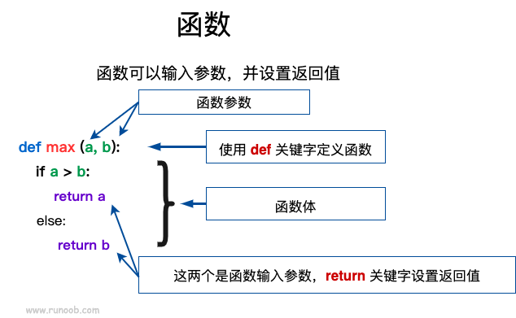

Funciones de Python3
Una función es un bloque de código organizado, reutilizable, que se utiliza para implementar una función única o relacionada.
Las funciones mejoran la modularidad de la aplicación y la tasa de reutilización del código. Ya sabes que Python proporciona muchas funciones integradas, como print(). Pero también puedes crear tus propias funciones, lo que se llama funciones definidas por el usuario.
Definir una función
Puedes definir una función con la funcionalidad que desees. Estas son las reglas simples:
- El bloque de código de la función comienza con ladefpalabra clave def, seguida del nombre del identificador de la función y paréntesis.()。
- Cualquier parámetro entrante y argumento debe colocarse entre paréntesis. Los paréntesis se pueden usar para definir parámetros.
- La primera línea de declaración de la función puede usar opcionalmente una cadena de documentación, para almacenar la descripción de la función.
- El contenido de la función comienza con dos puntos:y sangría.
- return [expresión]Finaliza la función y, opcionalmente, devuelve un valor a la persona que llama. return sin expresión equivale a devolver None.

Sintaxis
Python usa la palabra clave def para definir funciones. El formato general es el siguiente:
def 函数名（参数列表）:
函数体
Por defecto, los valores de los parámetros y los nombres de los parámetros coinciden en el orden definido en la declaración de la función.
Ejemplo
Usemos una función para imprimir "Hello World!":
def hello() :
print("Hello World!")
hello()
Una aplicación más compleja: la función incluye variables de parámetros:
Ejemplo (Python 3.0+)
Compara dos números y devuelve el mayor:
El resultado del ejemplo anterior:
5
Ejemplo (Python 3.0+)
Función para calcular el área:
El resultado del ejemplo anterior:
Welcome Runoob width = 4 height = 5 area = 20
Llamada a la función
Definir una función: darle un nombre a la función, especificar los parámetros que contiene y la estructura del bloque de código.
Una vez completada la estructura básica de esta función, puedes llamarla y ejecutarla a través de otra función, o directamente desde el símbolo del sistema de Python.
El siguiente ejemplo llama a laprintme()función:
Ejemplo (Python 3.0+)
El resultado del ejemplo anterior:
我要调用用户自定义函数! 再次调用同一函数
Paso de parámetros
En Python, los tipos pertenecen a los objetos, y los objetos se distinguen por diferentes tipos; las variables no tienen tipo:
a=[1,2,3] a="Runoob"
En el código anterior,[1,2,3]es de tipo List,"Runoob"es de tipo String, y la variable a no tiene tipo; es solo una referencia a un objeto (un puntero), que puede apuntar a un objeto de tipo List o a un objeto de tipo String.
Objetos mutables e inmutables
En Python, strings, tuples y numbers son objetos inmutables, mientras que list, dict, etc. son objetos modificables.
Tipos inmutables:Asignación de variablea=5y luego reasignara=10Aquí en realidad se genera un nuevo objeto int con valor 10, y luego a apunta a él, mientras que 5 se descarta. No es que se cambie el valor de a, equivale a que se haya generado una nueva a.
Tipos mutables:Asignación de variablela=[1,2,3,4]y luego reasignarla[2]=5Aquí se cambia el valor del tercer elemento de la lista la; la en sí no se modifica, solo se cambia una parte interna de sus valores.
Paso de parámetros en funciones de Python:
Tipos inmutables:Similar a la transferencia por valor en C++, como enteros, cadenas, tuplas. Por ejemplo fun(a), solo se pasa el valor de a, sin afectar al objeto a en sí. Si se modifica el valor de a dentro de fun(a), se genera un nuevo objeto a.
Tipos mutables:Similar a la transferencia por referencia en C++, como listas, diccionarios. Por ejemplo fun(la), se pasa la verdadera la; después de la modificación, la la externa a fun también se verá afectada.
En Python, todo es un objeto. Estrictamente hablando, no podemos decir transferencia por valor o transferencia por referencia; deberíamos decir pasar objetos inmutables y pasar objetos mutables.
Ejemplo de paso de objeto inmutable en Python
Mediante laid()función id() para observar el cambio de dirección de memoria:
Ejemplo (Python 3.0+)
El resultado del ejemplo anterior:
4379369136 4379369136 4379369424
Se puede ver que antes y después de llamar a la función, el parámetro formal y el argumento apuntan al mismo objeto (el id del objeto es el mismo). Después de modificar el parámetro formal dentro de la función, el parámetro formal apunta a un id diferente.
Ejemplo de paso de objeto mutable
Si un objeto mutable se modifica dentro de la función, entonces en la función que llama a esta función, el parámetro original también se cambia. Por ejemplo:
Ejemplo (Python 3.0+)
El objeto pasado a la función y el objeto al que se le agrega nuevo contenido al final usan la misma referencia. Por lo tanto, el resultado de salida es el siguiente:
函数内取值: [10, 20, 30, [1, 2, 3, 4]] 函数外取值: [10, 20, 30, [1, 2, 3, 4]]
Parámetros
A continuación se muestran los tipos de parámetros formales que se pueden usar al llamar a una función:
- Parámetros obligatorios
- Parámetros de palabra clave
- Parámetros por defecto
- Parámetros de longitud variable
Parámetros obligatorios
Los parámetros obligatorios deben pasarse a la función en el orden correcto. El número al llamar debe ser el mismo que al declarar.
Al llamar a la función printme(), debes pasar un parámetro; de lo contrario, se producirá un error de sintaxis:
Ejemplo (Python 3.0+)
El resultado del ejemplo anterior:
Traceback (most recent call last):
File "test.py", line 10, in <module>
printme()
TypeError: printme() missing 1 required positional argument: 'str'
Parámetros de palabra clave
Los parámetros de palabra clave están estrechamente relacionados con la llamada a la función. La llamada a la función usa parámetros de palabra clave para determinar el valor del parámetro pasado.
El uso de parámetros de palabra clave permite que el orden de los parámetros al llamar a la función no coincida con el de la declaración, porque el intérprete de Python puede usar los nombres de los parámetros para hacer coincidir los valores.
El siguiente ejemplo usa el nombre del parámetro al llamar a la función printme():
Ejemplo (Python 3.0+)
El resultado del ejemplo anterior:
菜鸟教程
El siguiente ejemplo demuestra que el uso de parámetros de función no requiere especificar el orden:
Ejemplo (Python 3.0+)
El resultado del ejemplo anterior:
名字: runoob 年龄: 50
Parámetros por defecto
Al llamar a una función, si no se pasa un parámetro, se utiliza el parámetro predeterminado. En el siguiente ejemplo, si no se pasa el parámetro age, se usa el valor predeterminado:
Ejemplo (Python 3.0+)
El resultado del ejemplo anterior es:
名字: runoob 年龄: 50 ------------------------ 名字: runoob 年龄: 35
Parámetros de longitud variable
Puede que necesites una función que pueda manejar más parámetros de los que se declararon originalmente. Estos parámetros se llaman parámetros de longitud variable y, a diferencia de los 2 tipos de parámetros anteriores, no se nombran al declararlos. La sintaxis básica es la siguiente:
def functionname([formal_args,] *var_args_tuple ): "函数_文档字符串" function_suite return [expression]
Los parámetros con asterisco*se importan en forma de tupla (tuple), y almacenan todos los parámetros variables sin nombre.
Ejemplo (Python 3.0+)
El resultado del ejemplo anterior es:
输出: 70 (60, 50)Si no se especifica ningún parámetro al llamar a la función, esta recibe una tupla vacía. También podemos no pasar variables sin nombre a la función. Como en el siguiente ejemplo:
Ejemplo (Python 3.0+)
El resultado del ejemplo anterior es:
输出: 10 输出: 70 60 50
También existe el caso de parámetros con dos asteriscos.**La sintaxis básica es la siguiente:
def functionname([formal_args,] **var_args_dict ): "函数_文档字符串" function_suite return [expression]
Los parámetros con dos asteriscos**se importan en forma de diccionario.
Ejemplo (Python 3.0+)
El resultado del ejemplo anterior es:
输出:
1
{'a': 2, 'b': 3}
Al declarar una función, el asterisco en los parámetros*puede aparecer solo, por ejemplo:
def f(a,b,*,c):
return a+b+c
Si el asterisco aparece solo*, los parámetros después del asterisco*deben pasarse utilizando palabras clave.
>>> def f(a,b,*,c): ... return a+b+c ... >>> f(1,2,3) # 报错 Traceback (most recent call last): File "<stdin>", line 1, in <module> TypeError: f() takes 2 positional arguments but 3 were given >>> f(1,2,c=3) # 正常 6 >>>
Funciones anónimas
Python usalambdapara crear funciones anónimas.
La llamada "anónima" significa que ya no se usadefla forma estándar de la instrucción def para definir una función.
- lambdalambda es solo una expresión, el cuerpo de la función esdefmucho más simple que el de def.
- El cuerpo de lambda es una expresión, no un bloque de código. Solo se puede encapsular una lógica limitada dentro de una expresión lambda.
- Las funciones lambda tienen su propio espacio de nombres y no pueden acceder a parámetros fuera de su lista de parámetros ni a los del espacio de nombres global.
- Aunque las funciones lambda parecen poder escribirse en una sola línea, no son equivalentes a las funciones inline de C o C++. El propósito de las funciones inline es no ocupar memoria de pila al llamar a funciones pequeñas, reduciendo así la sobrecarga de las llamadas a funciones y aumentando la velocidad de ejecución del código.
Sintaxis
La sintaxis de la función lambda contiene solo una declaración, como sigue:
lambda [arg1 [,arg2,.....argn]]:expression
Establece el parámetro a más 10:
Ejemplo
El resultado del ejemplo anterior es:
15
El siguiente ejemplo de función anónima establece dos parámetros:
Ejemplo (Python 3.0+)
El resultado del ejemplo anterior es:
相加后的值为 : 30 相加后的值为 : 40
Podemos encapsular funciones anónimas dentro de una función, de modo que podamos usar el mismo código para crear múltiples funciones anónimas.
El siguiente ejemplo encapsula la función anónima dentro de la función myfunc, creando diferentes funciones anónimas al pasar diferentes parámetros:
Ejemplo
El resultado del ejemplo anterior es:
22 33
Para más funciones anónimas, también se puede consultar:Python lambda (funciones anónimas)
Sentencia return
return [expresión]La declaración return se utiliza para salir de una función y devolver opcionalmente una expresión al llamador. La declaración return sin un valor de parámetro devuelve None. Los ejemplos anteriores no demostraron cómo devolver un valor numérico; el siguiente ejemplo ilustra el uso de la declaración return.
Ejemplo (Python 3.0+)
El resultado del ejemplo anterior es:
函数内 : 30 函数外 : 30
Parámetros solo posicionales
Python 3.8 añadió una sintaxis de parámetros formales / para indicar que los parámetros formales deben usar posiciones específicas y no pueden usar la forma de parámetros por palabra clave.
En el siguiente ejemplo, los parámetros formales a y b deben usar posiciones específicas, c o d pueden ser parámetros posicionales o de palabra clave, mientras que e y f deben ser parámetros de palabra clave:def f(a, b, /, c, d, *, e, f):
print(a, b, c, d, e, f)
Las siguientes formas de uso son correctas:
f(10, 20, 30, d=40, e=50, f=60)
Las siguientes formas de uso causarán errores:
f(10, b=20, c=30, d=40, e=50, f=60) # b 不能使用关键字参数的形式 f(10, 20, 30, 40, 50, f=60) # e 必须使用关键字参数的形式Otras extensiones
No seguir
368***608@qq.com
Los parámetros predeterminados deben colocarse al final; de lo contrario, se producirá un error:
# 可写函数说明 def printinfo( age=35,name): # 默认参数不在最后，会报错 "打印任何传入的字符串" print("名字: ", name) print("年龄: ", age) returnNo seguir
368***608@qq.com
夏老爷
112***6553@qq.com
URL de referencia
def(**kwargs)Convertir N parámetros de palabra clave en un diccionario:
>>> def func(country,province,**kwargs): ... print(country,province,kwargs) ... >>> func("China","Sichuan",city = "Chengdu", section = "JingJiang") China Sichuan {'city': 'Chengdu', 'section': 'JingJiang'} >>>夏老爷
112***6553@qq.com
URL de referencia
dessertfox
che***anren@tju.edu.cn
Las funciones anónimas lambda también pueden usar "parámetros de palabra clave" para pasar parámetros.
De igual manera, las funciones anónimas lambda también pueden establecer valores predeterminados.
Nota:Si solo se pretende establecer valores predeterminados para una parte de los parámetros, estos deben colocarse en las posiciones finales (igual que al definir funciones, para evitar ambigüedades); de lo contrario, se producirá un error.
dessertfox
che***anren@tju.edu.cn
Mr.Wang
992***591@qq.com
En cuanto a la introducción de tipos mutables e inmutables, así como los tipos por valor y por referencia en otros lenguajes, siempre me ha parecido poco rigurosa; la exactitud de la afirmación está por verificar.
En pocas palabras, si un tipo inmutable se pasa a una función y se reasigna, los dos valores de salida son diferentes; mientras que si un tipo mutable se pasa a una función y se reasigna la "propiedad" del objeto, los valores de salida son iguales.
Aquí reproduzco un ejemplo:
# 可写函数说明 def changeme( mylist ): "修改传入的列表" mylist.append([1,2,3,4]) print ("函数内取值: ", mylist) return # 调用changeme函数 mylist = [10,20,30] changeme( mylist ) print ("函数外取值: ", mylist)Tenga en cuenta: la parte entre comillas se ha usado deliberadamente; la operación sobre tipos mutables o referencias modifica los atributos del objeto pasado.
Se puede entender así (el ejemplo es un poco informal): estoy pintando, llega Xiaoming y dice que también quiere pintar; le dejo pintar conmigo. Si pinta en el mismo lienzo que yo, nuestros cuadros cambiarán a la vez. Pero si dice que no, que quiere usar otro lienzo, y entonces toma otro lienzo y pinta, naturalmente nuestros cuadros serán diferentes.
Del mismo modo, operar sobre los atributos de un tipo mutable solo modifica el valor dentro del bloque de memoria al que se hace referencia; la referencia no cambia, por lo que los valores de todos los objetos que la referencian cambian. En cambio, al operar sobre un objeto inmutable, como el bloque de memoria al que se refiere corresponde a un valor fijo y no se puede modificar, reasignar en realidad equivale a actualizar la referencia.
Si ejecutamos el siguiente ejemplo, al modificar la referencia de un tipo mutable, el resultado será diferente.
# 可写函数说明 def changeme( mylist ): "修改传入的列表" mylist = [1,2,3,4] print ("函数内取值: ", mylist) return # 调用changeme函数 mylist = [10,20,30] changeme( mylist ) print ("函数外取值: ", mylist)Resultado
Mr.Wang
992***591@qq.com
Rosevil1874
157***11424@163.com
En cuanto al ámbito de las variables, el acceso a las variables se busca según la reglaL（Local） –> E（Enclosing） –> G（Global） –>B（Built-in）de búsqueda, es decir: si no se encuentra en el ámbito local, se busca en el ámbito local externo (por ejemplo, cierres); si no se encuentra, se busca en el ámbito global; y luego en el ámbito integrado.
Observa los siguientes ejemplos, todos ellos generan la variable x desde una función interna:
1. Ámbito local
x = int(3.3) x = 0 def outer(): x = 1 def inner(): x = 2 print(x) inner() outer()El resultado de ejecución es 2, porque en este caso la variable x se encuentra directamente dentro de la función inner.
2. En la función fuera de la función de cierre
x = int(3.3) x = 0 def outer(): x = 1 def inner(): i = 2 print(x) inner() outer()El resultado de ejecución es 1, porque la variable x no se encuentra en la función interna inner; se continúa buscando en el ámbito local externo, es decir, en la función outer, donde se encuentra y se imprime 1.
3. Ámbito global
x = int(3.3) x = 0 def outer(): o = 1 def inner(): i = 2 print(x) inner() outer()El resultado de ejecución es 0; no se encuentra la variable x ni en el ámbito local (función inner) ni en el ámbito local externo (función outer), así que se accede a la variable global, donde la encuentra y la imprime.
4. Ámbito integrado
x = int(3.3) g = 0 def outer(): o = 1 def inner(): i = 2 print(x) inner() outer()El resultado de ejecución es 3; no se encuentra la variable x en el ámbito local (función inner), en el ámbito local externo (función outer) ni en las variables globales, así que se accede a la variable integrada, donde la encuentra y la imprime.
Rosevil1874
157***11424@163.com
ls
moo***huan@foxmail.com
Dentro de una función se puede acceder a las variables globales, ¡pero no se puede actualizar (modificar) su valor!
Ejemplo:
a = 10 def sum ( n ) : n += a print ('a = ', a, end = ' , ' ) print ( 'n = ', n ) sum(3)Salida:
Si se hace referencia a un valor que aún no se ha actualizado, se producirá un error:
a = 10 def sum ( n ) : n += a a = 11 print ('a = ', a, end = ' , ' ) print ( 'n = ', n ) sum(3)Salida:
...Se puede añadir la referencia global para actualizar el valor de la variable:
a = 10 def sum ( n ) : global a n += a a = 11 print ('a = ', a, end = ' , ' ) print ( 'n = ', n ) sum ( 3 ) print ( '外 a = ', a )Salida:
a = 11 , n = 13 Fuera a = 11
ls
moo***huan@foxmail.com
FVortex
hty***80402@qq.com
Una función también puede tomar una función como parámetro:
def hello () : print ("Hello, world!") def execute(f): "执行一个没有参数的函数" f() execute(hello)Salida:
FVortex
hty***80402@qq.com
Mr.Wu
928***263@qq.com
Se puede utilizarnombre_funcion.__doc__para mostrar la documentación de la función. Creo que esto es útil al leer programas grandes, y también me recuerda añadir documentación al escribir funciones.
def add(a,b): "这是 add 函数文档" return a+b print (add.__doc__)El resultado es:
Mr.Wu
928***263@qq.com
Mr.Wu
928***263@qq.com
Notas sobre el valor de retorno de las funciones: a diferencia de C, las funciones de Python pueden devolver múltiples valores, y se devuelven en forma de tupla:
def fun(a,b): "返回多个值，结果以元组形式表示" return a,b,a+b print(fun(1,2))El resultado es:
Mr.Wu
928***263@qq.com
sprinkle
117***1554@qq.com
Decoradores de funciones
Agregar nuevas funciones a la función actual sin modificarla:
def log(pr):#将被装饰函数传入 def wrapper(): print("**********") return pr()#执行被装饰的函数 return wrapper#将装饰完之后的函数返回（返回的是函数名） @log def pr(): print("我是小小洋") pr()El decorador es un ejemplo de función de devolución de llamada y de función que devuelve una función.
sprinkle
117***1554@qq.com
Null
wuh***ing2012@163.com
Dirección de referencia
1. Las funciones internas pueden acceder a las variables globales sin modificarlas.
a = 10 def test(): b = a + 2 #仅仅访问全局变量 a print(b) test()El resultado es:
2. Si una función interna modifica una variable global con el mismo nombre, Python la tratará como una variable local (igual que el último ejemplo del tutorial).
#!/usr/bin/python3 a = 10 def test(): a = a + 1 #修改同名的全局变量，则认为是一个局部变量 print(a) test()3. Si se llama al nombre de la variable (por ejemplo, print sum) antes de que la función interna modifique la variable global del mismo nombre, se provocará un UnboundLocalError.
Null
wuh***ing2012@163.com
Dirección de referencia
richael
ric***l0302@163.com
Aquí agrego un poco de conocimiento sobre global y nonlocal:
nonlocal solo puede modificar las variables de la función externa, pero no puede modificar las variables globales referenciadas por la función externa. Aquí hay un ejemplo:
x = 0 def outer(): global x x = 1 def inner(): nonlocal x x = 2 print(x) inner() outer() print(x)El resultado arrojará un error:
line 6 nonlocal x ^ SyntaxError: no binding for nonlocal 'x' foundrichael
ric***l0302@163.com
Gato dormilón
199***09662@163.com
globalLa palabra clave omitirá la capa intermedia y convertirá directamente la variable local del ámbito anidado en una variable global:
El código de prueba es el siguiente:
num = 20 def outer(): num = 10 def inner(): global num print (num) num = 100 print (num) inner() print(num) outer() print (num)Los resultados son los siguientes:Gato dormilón
199***09662@163.com
El sonido de las olas sigue igual
152***4927@qq.com
En Python, al definir una clase, se puede escribir su constructor _init_(), donde el parámetro formal self equivale a myname al instanciar:
class demo: name = "" def _init_(self): self.ex() self.start() def inputName(self): global name name = input("輸入您的姓名：") def getFirstName(self): if len(name) <= 0: x = "別鬧！請輸入姓名！" return x else: x = name[0] return x def getLastName(self): if len(name) <= 1: y = "別鬧！長度不夠！" return y else: y = name[1:] return y myname = demo() myname.inputName() print(myname.getFirstName()) print(myname.getLastName())El sonido de las olas sigue igual
152***4927@qq.com
fanchen
227***223@qq.com
Los parámetros de una función se dividen enParámetros formales和Argumentos reales。
1. ¿Qué son los parámetros formales?
Para una función, un parámetro formal es un nombre de variable definido al definir la función.
En el siguiente código, x, y y z son los parámetros formales.
#定义函数 def foo(x, y, z): print("x=", x) print("y=", y) print("z=", z) #调用函数 foo(1,3,5) #此处的1,3,5是实参Resultado de salida:
Función de los parámetros formales: se utilizan para recibir los valores introducidos al llamar a la función.
2. ¿Qué son los argumentos reales?
Para una función, los parámetros reales se abrevian como argumentos reales.
Se refieren a los datos reales que se pasan al llamar a la función, y se vinculan a los parámetros formales de la función.
Al llamar a la función, los valores se vinculan a los nombres de variables; al finalizar la llamada, se desvinculan y los argumentos ya no existen en el programa.
Los 5, 2 y 0 de arriba son todos argumentos reales.
fanchen
227***223@qq.com
べPuente Roto en la Lluvia Brumosaミ
Leg***_1949@126.com
Al escribir funciones, se pueden especificar explícitamente los tipos de parámetros y el tipo de valor de retorno:
#!/usr/bin/env python3 # -*- coding: UTF-8 -*- def function_demo(param_A: int, param_B: float, param_C: list, param_D: tuple) -> dict: passEste tipo de«fijar el tipo de datos en el código»es especialmente útil en entornos de desarrollo integrado/editores de código. Al especificar explícitamente los tipos de parámetros y el valor de retorno, el componente de autocompletado inteligente puede conocer de antemano el tipo de datos de los identificadores, lo que ofrece útiles funciones auxiliares de desarrollo.
べPuente Roto en la Lluvia Brumosaミ
Leg***_1949@126.com
Li Yu
146***0060@qq.com
Con respecto al uso mencionado anteriormente de pasar objetos de función a funciones, me gustaría añadir algo más.
1. La función que se pasa a otra función puede tener parámetros:
def demo(*p): i=0 for var in p: var(i) i+=1 def d1(i): print("这里是第一个子函数,输入的数是",i) def d2(i): print("这里是第二个子函数,输入的数是",i) def d3(i): print("这里是第三个子函数,输入的数是",i) def d4(i): print("这里是第四个子函数,输入的数是",i) demo(d1,d2,d3,d4)El código anterior se ejecuta sin problemas.
2. Incluso si tu función tiene parámetros, no puedes añadirle parámetros al pasarla a otra función. Siguiendo con el ejemplo anterior:
Esto provocará un error, porque en ese momento d1(7) es el valor de retorno de d1(), y no se pueden pasar parámetros ni llamarlo dentro del método.
Li Yu
146***0060@qq.com
zppet
zpp***sina.com
Sobre si los parámetros de una función pueden modificarse dentro de la función.
Mi entendimiento es el siguiente: si aparece una sentencia de asignación dentro de la función, significa que se ha generado un nuevo objeto, y el objeto al que apunta el parámetro de entrada de la función ha cambiado. En ese momento, cualquier cambio posterior solo opera sobre el objeto recién generado.
El código de prueba es el siguiente:
#!/usr/bin/python3 # -*-coding:utf-8 -*- # 可写函数说明 def changeme( mylist ): "修改传入的列表" b=mylist print(id(b)) print(id(mylist)) mylist[1]="Hello World!" print ("函数内取值1: ", mylist) print("b:",b) mylist.append([1,2,3,4]) #mylist=[1,2,3,4] print ("函数内取值2: ", mylist,b) mylist=[11,21,31,41] print ("函数内取值3: ", mylist,b) return # 调用changeme函数 mylist = [10,20,30] changeme( mylist ) print ("函数外取值: ", mylist)Resultado de salida:
zppet
zpp***sina.com
shs1992shs
457***946@qq.com
En respuesta al comentario anterior@ISSobre el tema de que dentro de una función se puede acceder a variables globales, pero no se puede actualizar (modificar) su valor. Después de probarlo, en realidad sí se pueden modificar las variables globales dentro de la función. El código de prueba es el siguiente:
1. Acceder a una variable global:
a = 10 def sum ( n ) : n += a # 调用全局变量a print ('a = ', a, end = ' , ' ) print ( 'n = ', n ) sum(3)Salida:
2. Reasignar la variable global dentro de la función y llamarla de nuevo:
a = 10 def sum ( n ) : a = 20 # 重新赋值 n += a # 调用全局变量a print ('a = ', a, end = ' , ' ) print ( 'n = ', n ) sum(3)Salida:
3. Si se llama a una variable global dentro de la función, pero luego se modifica esa variable, se producirá un error (se provocará UnboundLocalError):
a = 10 def sum ( n ) : n += a # 调用了全局变量a，但是之后又修改了a，引发错误，若将a=11注释掉则不会报错，或将a=11语句置于调用语句之前也不会报错 a = 11 # 修改了全局变量 print ('a = ', a, end = ' , ' ) print ( 'n = ', n ) sum(3)Salida:
4. Si la variable global ya se ha reasignado antes de que la función la invoque, entonces, después de invocarla, modificar su valor de nuevo no producirá un error.
a = 10 def sum ( n ) : a = 20 # 修改了全局变量 n += a # 调用了全局变量a a = 11 # 再次修改全局变量 print ('a = ', a, end = ' , ' ) print ( 'n = ', n ) sum(3)Salida:
5. Se puede añadir la referencia global para actualizar el valor de la variable:
a = 10 def sum ( n ) : global a n += a a = 11 print ('a = ', a, end = ' , ' ) print ( 'n = ', n ) sum ( 3 ) print( '外a = ', a )Salida:
shs1992shs
457***946@qq.com
codeduck1
cod***ck@aliyun.com
Le sugiero al comentarista anterior que entienda qué son las variables globales y locales antes de escribir comentarios; está desorientando a la gente.
a = 10 # 此处a是声明全部变量 def sum ( n ) : a = 20 # 此处a是声明局部变量，局部变量会随着方法出栈而消失(闭包除外) n += a # 此处调用的是局部变量a print ('a = ', a, end = ' , ' ) print ( 'n = ', n ) a = 10 def sum ( n ) : n += a # 此处引用全局变量a, 注意：这个函数内并没有声明局部变量a a = 11 # 此处修改全局变量a, 必然会报错！如要函数内修改全部变量，用global声明就不会报错 print ('a = ', a, end = ' , ' ) print ( 'n = ', n )Las funciones de los comentarios de arriba y de abajo también son así; no las describiré una por una...
codeduck1
cod***ck@aliyun.com